前言
距離上一次寫文章，剛好過了 3 個月 XDD ，人家富木堅至少一次出 10 話，但小弟的文章，感覺這幾年荒廢不少..抖抖，當然其中有滿多因素的啦，所以希望新的一年，能開始重回執筆，有空就來多多寫一些文章吧… ( 印象 2017 年初也是這樣寫… )
這篇，其實也沒什麼超高深技巧，更不是什麼新玩意，其實這幾年大家都已經實做了非常多，文章數量也很多了，甚至小弟以前也寫過一篇，但想說，已經很久沒寫文章了，最近也剛好要建構一系列的環境，就想說，留個紀錄，留給後人吧 :)，也順便把之前的舊文調整更新一下。
最後，其實這段沒寫文章的時間，也受到滿多不認識的人鼓勵，能忍受小弟誤人子弟的文章 XDDD，因為你們的鼓勵，小弟終於要開始寫新的 10 話了，不過這個故事，未來再另外開一篇來講吧 :)
CI 持續整合
CI 持續整合，其實小弟不會在這邊談太多，因為已經有非常多專業的前輩，有很棒的文章和敘述，只要 Google 一下，每一篇一定都寫得比小弟還要好 ( 抖抖 )，所以小弟這邊只是快速談一下，為什麼要持續整合：其實大家想一下，在團隊合作的時候，常常會聽到，啊！！為什麼下載出來的 Code Build 了！！？，剛剛是誰簽入的：主事者就會跳出來說，是我簽入的，但我的電腦上明明就可以 Build 啊！！
啃. ( 相信大家心中都會浮現這個字 )
那問題在哪邊，其實，有可能簽入的時候，少遷入一個 .cs 檔案，也有可能引用第三方 Lib 的時候，忘記把 Dll 簽入進去 ( 這還滿常見的，因為預設簽入會略過 Dll )，而因為本機 ( 主事者 )上的電腦都還有這些檔案，當然都可以 Build，但簽出者娶不到這些檔案，當然就
啃!
好吧，所以在整個軟體開發流程裡面，當導入版控後，下一步就是導入 CI 機制。
所以透過 CI 機制，當簽入的時候，就會自動觸發 Build 的動作，當 Build 失敗的時候，馬上就可以抓到，到底是誰簽入造成的問題，然後馬上處理 ( 凹請喝飲料 )，讓未來的大家簽出的時候，都能正常 Build。
正常 Build 很重要，因為這可以確保每人取出來的 Code 都能正常運作，也可以降低不必要的時間來處理這些事情與回憶。
當然，有時也會整合 Night Build （ 每晚一次 ），來進行自動化的測試，但這個主題就太遠了，讓小弟默默地飄過吧~~
結論，CI 很重要，因為這樣才有飲料可以喝~~ 抖抖
CD 持續部署
當完成了 CI 後，下一步，就是希望能全部自動化，幫我們把應用程式自動的部署到測試環境，UAT，甚至是正視環境，關於 CD ，我們就後續再談吧。
VSTS and Agent
VSTS 是真的不錯的東西，不但裡面包含了整個軟體開發生命週期需要用到的功能外，你也可以自行挑選與組合外界的 Open Source 方案，而 VSTS 也內建了 Hosted Agent，來提供你 不用 架設任何一台 Build Server 的情況下，就可以直接使用。
但好歸好，人家提供服務，就是會收取服務費的，當然，使用者付費，也是天經地義，但除了使用官方預設的服務外，我們當然也可以自行建立一台 VM，來提供 Build 的服務：通常，通常，會自建 Build 的服務，大體上，是幾個原因，一來是 Build 的次數很多，用 Hosted Agent 比較燒錢，其次，就是希望能有更快的 Build 速度，最後，就是 Hosted Agent 裡面沒包含了自己想要的軟體。
所以這篇，我們就先來看一下，怎樣在 VSTS 下，自建 Agent，下一篇，再來介紹如何設定 Build 一個 ASP.NET MVC 5.X 的應用程式。
VSTS 與 Agent 連線
首先，我們要先準備一台 Build Server，雖然稱為 Build Server，但小弟這邊是使用 Win 10 當作 Build Server，因為它主要是拿來 Build ，既然是 Build，內容環境和 Client 越像越好，當然，也先預裝了 VS 2017，喔，這台 Build Server 目前就直接擺在 Azure 上。
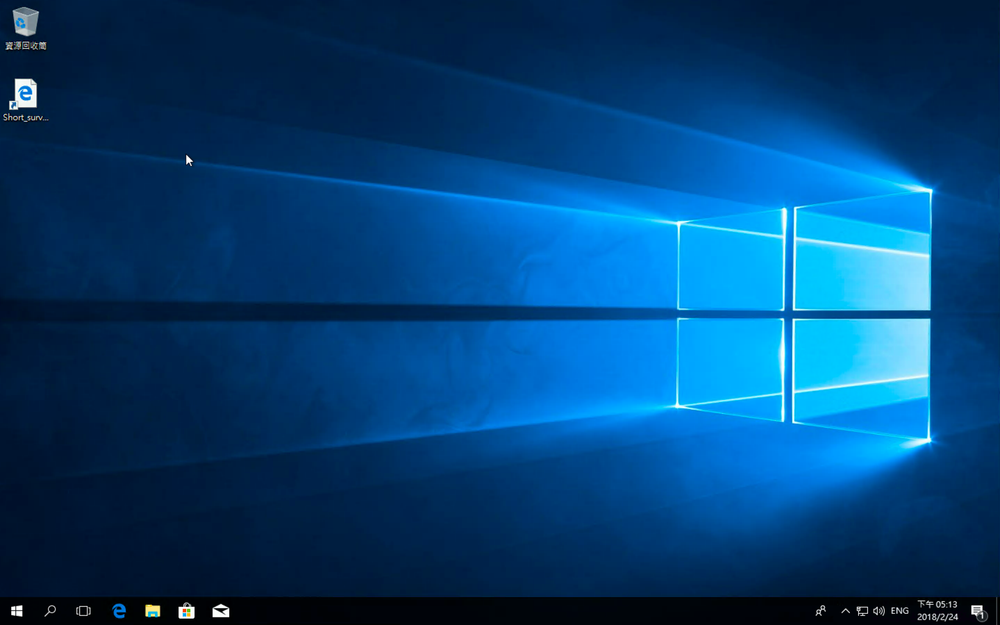
準備權限帳號
開始前，我們要先準備權限帳號，這邊如文章所敘述，有兩種方式可以提供權限，一種是用 personal access token (PAT) 的方式，也就是建立一組只能做某些事情的 Token，另外一個是透過 TFS 使用者，也就是透過 AD 帳號，或是 Windows 帳號：基本上，小弟會偏向使用 PAT 的方式，雖然 AD 帳號很方便，但如果遇到 macOS / Linux 平台的時候，是不支援 AD 的，只能在 TFS 上本機來建立 Windows 帳號：如果一台 TFS 可能還好，但如果多台，那每一台都要建立，其次，就算每一台都建立好了，也和 AD 脫鉤了，在維護上，也不是很好：所以還是建議使用 PAT 的方式，另外一個原因，VSTS 在官方文件裡面，也只暗示使用 PAT。( 這部分官方文件沒明講，有興趣的可以讓 VSTS 連線 AAD ，看看能不能透過 AD 帳號來處理 )
要建立 PAT，可以透過底下方式來設定。
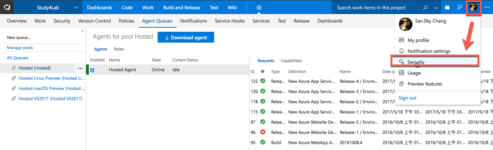
新增加一個。
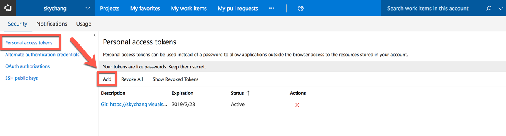
這邊描述建議寫清楚，不然其實到時候很容易忘記…然後決定這個 Token 的有效期間，並且選擇 Agent Pools (read, manage)，如果未來這個 Agent 要包含 Release 功能 ( 自動部署 )，也可以勾選 Deployment group (read, manage)。
請注意，為了安全性，其他的千萬不可以勾選。
完成後，按下 Create Token，然後把 Token 複製下來，一定要複製！！，關閉後，就永遠看不到了…
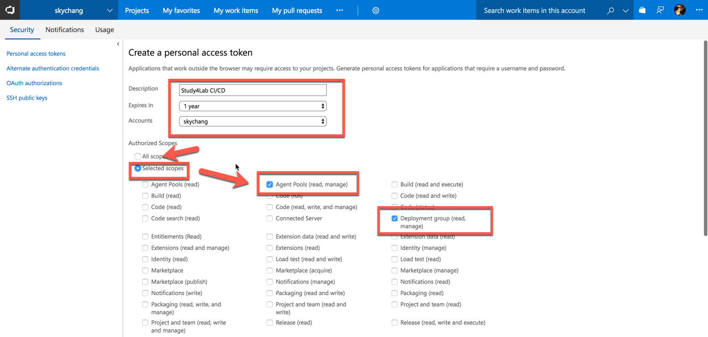
Agent 和權限
在開始前補充一下，雖然這篇寫的是 VSTS ，但還是補充一下 TFS 的驗證，在 TFS 2015 的時代，只可以使用底下底下三種驗證。
- Alternate Connect to TFS using Basic authentication
- Negotiate Connect to TFS as a user other than the signed-in user via a Windows authentication scheme such as NTLM or Kerberos
- Integrated (Default) Connect a Windows agent to TFS using the credentials of the signed-in user via a Windows authentication scheme such as NTLM or Kerberos.
簡單的說，第一種就是透過 Windows 的本機帳號進行驗證，而預設 ( Integrated Connect ) 就是用你目前登入的 AD 帳號，所以就不會跳出視窗讓你輸入帳號密碼，而 Negotiate Connect 一樣是透過 AD，但會跳出視窗讓你輸入帳號密碼。
另外，關於上面的這種驗證方式，也還必須去設定和給予權限，這邊會有兩個重要的帳號，一個是 Agent Pool Administrator，一個是 Agent Pool Service Account，Agent Pool Administrator 只會在 Agent 與 TFS 連線的時候，註冊到 TFS 時使用，註冊完後，就沒用了，這個帳號可以給 TFS 的 Administrator ( Owner )，而 Agent Pool Service Account ，則是 Agent 每次啟動服務的時候，必須使用到的帳號，根據文件，這個就不能使用 TFS 的 Administrator ( Owner )，必須建立一個新的帳號，通常小弟會建立一個 Builder 的 AD 帳號。
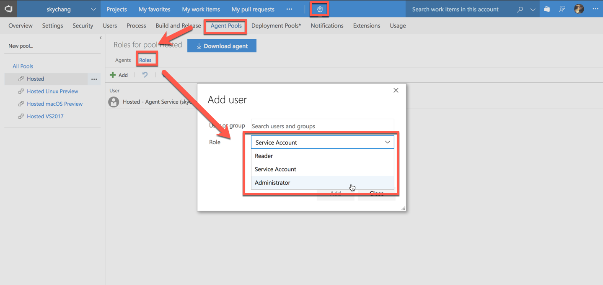
最後，支援 TFS 2017 以後版本和 VSTS，則是要我們剛剛建立的 PAT，等下我們也會用這個方式進行驗證。
- PAT
設定 Agent Pool
設定完權限後，我們要先在 VSTS 裡面新增一個 Agent Pool：雖然這一步感覺很簡單，但其實也是有學問，因為 VSTS / TFS 是有階層的，以 TFS 為案例，TFS 最上層預設為 DefaultCollection，底下才是專案，所以 Agent Pool 也會有在 DefaultCollection 新增完後，並設定 Auto Proversion Queue 後，就全部的專案都可以使用，而你也可以進入每個專案，指定每個專案只能用哪些 Agent Pool。
以 VSTS 來說，如果從主畫面，進入的設定。
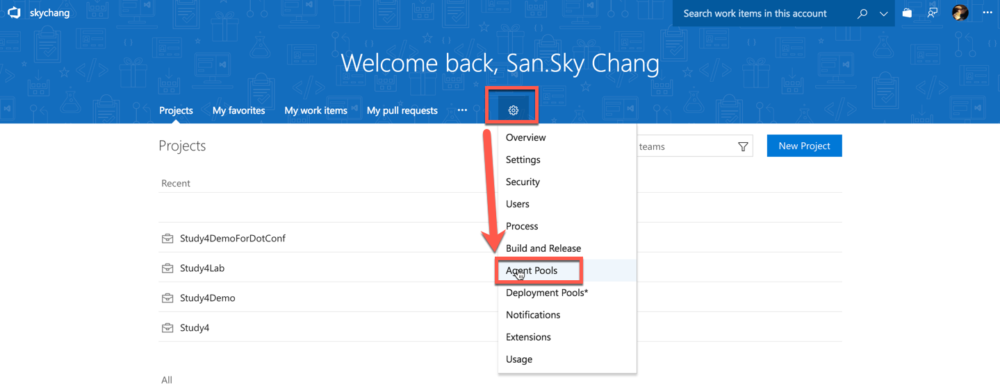
這邊設定的就是提供給全部的，換言之，最容易分別的，就是左上角的選單畫面了，如果左上角的是網址名稱，那就是最根的位置，我們就可以在這邊設定全部專案共用的 Agent Pool。
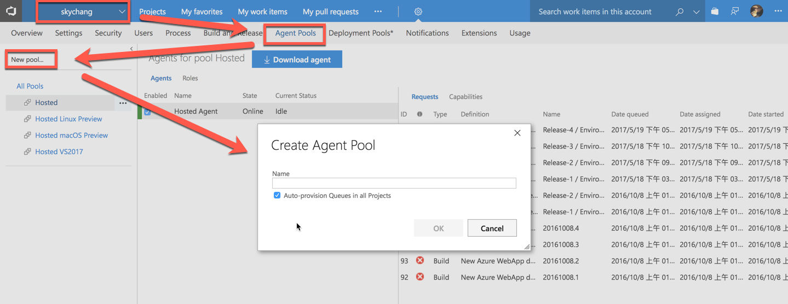
如下圖，我們建立了兩個 AgentPool，一個是 ShareAgentPool，一個是 Study4LabAgentPool，我們可以從這邊指定 Auto Proversion Queue，是否要提供給全部專案使用：目前小弟這邊是打算 ShareAgentPool 提供給全部的專案，而 Study4LabAgentPool 不提供給全部的專案，只提供給 Study4Lab 專案。
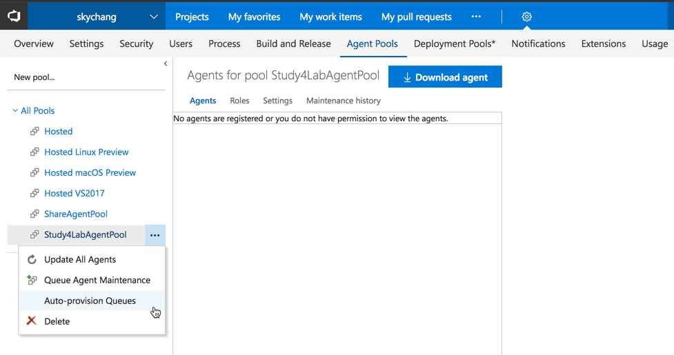
進入到 Study4Lab 專案，這時候，我們就可以從下圖的位置，設定 Study4LabAgentPool，這樣，就只有 Study4Lab 有權限使用。
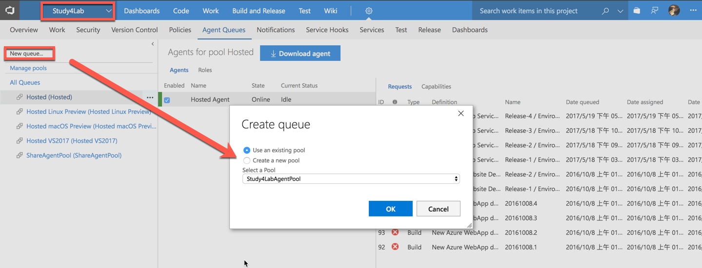
安裝 Agent Pool
接下來，利用這台 Build Server 登入 VSTS，並進入要建立 CI 的專案後，進行設定。( 其實這邊也只是想下載 Agent 這個軟體.. )
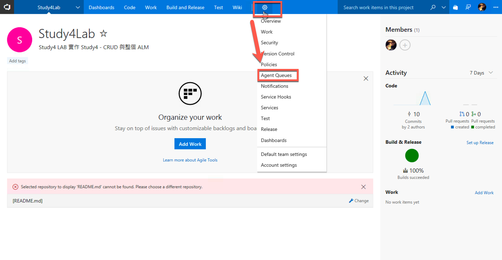
進入後，就可以 Download Agent，另外，未來也可以從這邊看到所有建立的 Agent 的狀況，而 Hosted Agent 就是官方所提供的 :)
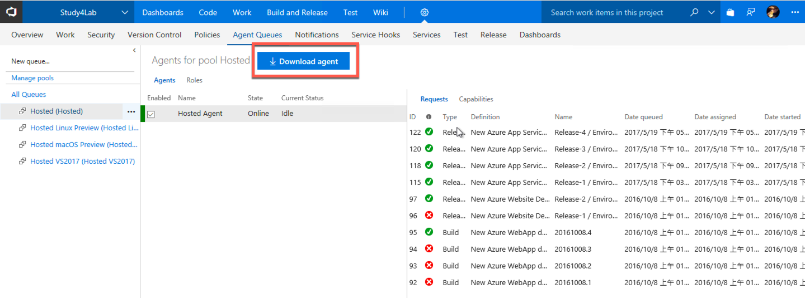
點擊後，就有一步一步的完成步驟… ( 那麼詳細，小弟都可以不用寫文章了…)
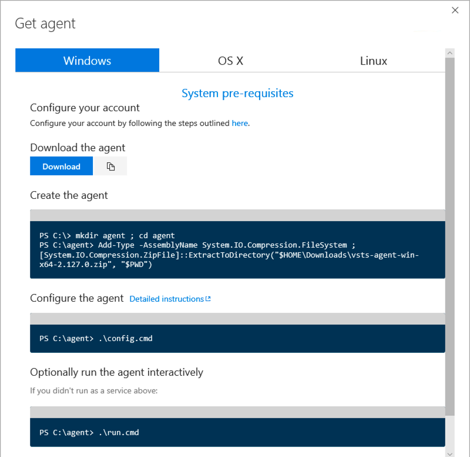
接著，我們照著指令一步一步做，第一步，就是在 C: 底下建立目錄，而第二步，其實只是利用 System.IO.Compression.FileSystem 來執行解壓縮的動作， $HOME ，就是家目錄，$PWD 是目前目錄 ( c:\Agent )，所以如果有更改下載位置的朋友，記得要修改路徑：當然，也可以直接點兩下 ZIP 檔案來解開，然後拖到這個目錄下，但有的時候，連建立 Build Server 都是需要自動化的，所以這邊就維持官方的做法。
1 | Add-Type -AssemblyName System.IO.Compression.FileSystem ; [System.IO.Compression.ZipFile]::ExtractToDirecto |
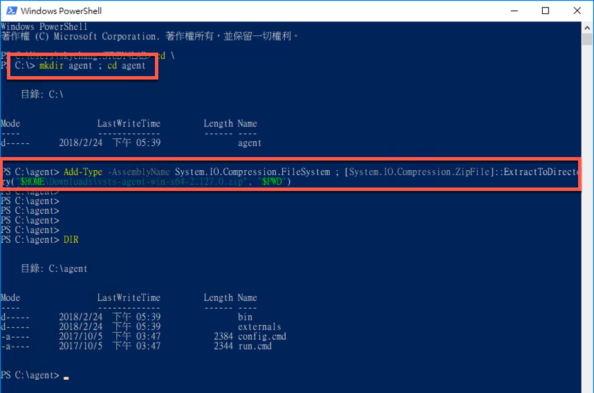
接下來，我們只要執行 ./confug.cmd 就可以開始設定：設定個過程很簡單，給 VSTS 的網址，決定使用的驗證方式，輸入 PAT，輸入 Agent Pool 名稱，輸入代理程式名稱，就差不多了。
比較需要注意的是後面兩個，一個是問你要不要註冊成 Windows 服務，通常小弟是不喜歡，所以就不註冊程服務了，另一個是問你要不要開機啟動，小弟也是習慣自己下命令。
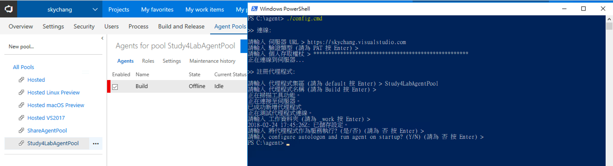
如果想要移除的話，就輸入，但依然要提供權限或是 PAT。
1 | .\config.cmd remove |
最後，我們只要執行底下指令，就可以順利把 Agent Run 起來
1 | .\run.cmd |
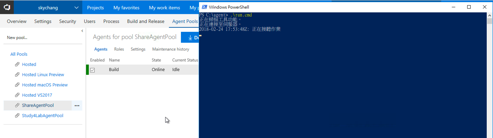
以上，完成~~ ( 拍手.. )
後記
其實原本這一篇是想把 CI 寫完的，但後來發現，補充了太多東西，整整寫了一整天才把 Agent 的建立寫完… ( 抖抖，所以我們不要怪富木堅拖稿了… ) 後來寫到現在半夜兩點，決定先到此為止，下一篇再來介紹 CI 的設定。
最後，關於官方文件，有寫到一些滿有趣的 Q&A，例如，如果 Agent 在地端，要防火牆開哪些網址，如何使用自簽憑證，如何使用 Web Proxy 等等，小弟就不在這邊多敘述了，有興趣可以看原文喔。